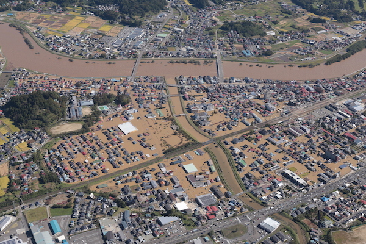
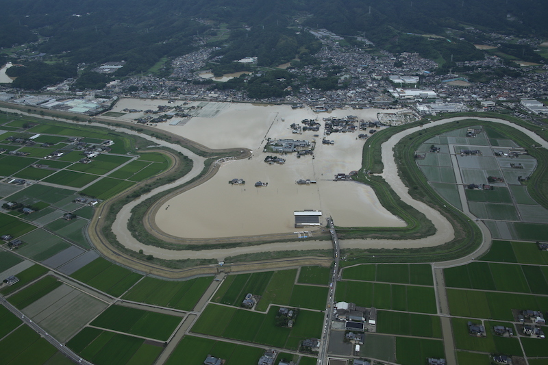
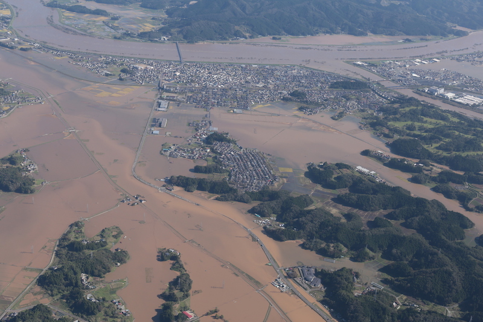
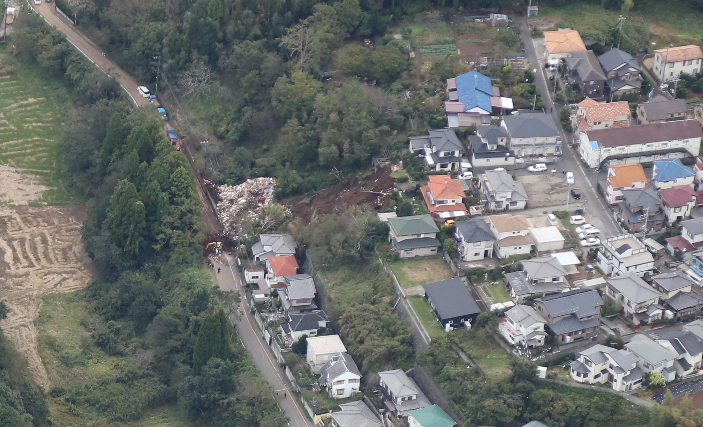

たいへん申し訳ありませんが、ブラウザが対応しておりません。
Chrome、Edge、Firefoxなどのブラウザでアクセスをお願いいたします。
2019年の台風・豪雨災害
グラフィックで振り返る 2019年の台風・豪雨災害

2019年は台風19号の印象が強かった一方で、それ以外にも九州北部豪雨、千葉県豪雨など日本各地で台風・豪雨被害が相次ぎました。そこで東洋経済では、全国の気象観測所における降水量データをグラフィック化。今年の主な台風・豪雨被害を振り返るデータビジュアルを制作しました。
画面下部のボタンで日付を移動できます。右下の「 i 」マークはこの記事そのものに関する情報を表示し、特に降水量の多かった日になると「！」マークに変わり、その時期に起きた豪雨・台風災害の解説を読むことができます。
クリックで日付に移動：
2019年に起こった豪雨や台風による災害はこれがすべてではありません。政府広報では災害に備えて防災気象情報の活用、ハザードマップの確認、非常持ち出し品の用意などを呼びかけています。台風や降水量が例年あまり多くない地域でも日頃から備えておくことが重要です。
降水量データは気象庁よりスクレイピングで取得。グラフィックの描画はUBERの提供するオープンソースのWebGLフレームワークDeck.GLを使った。地図タイルは国土地理院の全国最新写真（シームレス）を使用。各種アイコンはMaterial DesignのIconsから。
制作：荻原 和樹（東洋経済オンライン編集部）
| 観測地点 | 日付 | 降水量 |
|---|
日別（0-24時）降水量の推移
九州南部豪雨
九州南部では、6月末から7月初頭にかけて、停滞した梅雨前線が活発化したことによる豪雨が発生しました。熊本県、鹿児島県、宮崎県では合計180万人以上に避難指示や避難勧告が発令され、鹿児島県では死者が2名、5名が重軽傷を負いました。7月3日には鹿児島県の吉ケ別府では1日降水量が460mmに達し、宮崎県のえびのでは6月28日から7月5日までの総降水量が1000mmを超えるなど、記録的な大雨となりました。
台風10号
8月6日にマリアナ諸島で発生した台風10号は、8日に勢力のピークを迎えました。アジア名は「クローサ（Krosa）」。その後は徐々に勢力を落としつつ北上し、15日に広島に上陸しました。台風10号は西日本の太平洋側を中心に強い雨と暴風をもたらし、15日に予定されていた第101回全国高等学校野球選手権大会（夏の甲子園）はすべての試合を中止し、16日に順延となりました。特に雨の影響が強かったのは四国。高知県の魚梁瀬では15日に616mmの猛烈な雨が降りました。
九州北部豪雨

8月27日から28日にかけて、九州の北部では秋雨前線と湿った空気の影響で記録的な集中豪雨が発生。長崎県平戸市平戸では28日8時までの24時間で434mmの雨が降るなど、佐賀県や長崎県の各地で観測史上1位の降水量を記録しました。政府は28日明け方に佐賀県、福岡県、長崎県に大雨特別警報を発表。死傷者6名、住宅975棟が全壊・半壊しました。
台風15号
8月末に発生し、「非常に強い」勢力を保ったまま関東に接近した台風15号は、9月9日に千葉市付近に上陸。最大瞬間風速は神津島で58.1メートル、千葉で57.5メートルなど多くの地域で記録的な暴風となりました。一部破損や浸水などをすべて含めた住宅被害は7万棟に上りました。また、千葉県内では台風15号により送電塔や電柱が倒れ、神奈川県なども含めて約93万戸が停電しました。市原市にあるゴルフ練習場の鉄柱が倒れたのもこのときです。
台風19号
10月6日の発生からわずか2日で「猛烈な勢力」（中心付近の10分間平均最大風速が105ノット以上）に発達した台風19号は、その後「強い勢力」を維持して12日に伊豆半島に上陸。関東地方を中心として、各地で観測史上1位となる強い雨をもたらしました。
政府はこの台風を激甚災害、特定非常災害（2018年の西日本豪雨以来、6例目）、大規模災害復興法の非常災害（2016年の熊本地震以来、2例目）に指定。死者・行方不明者は100名を超え、住家被害も全壊・半壊が約2万8000棟、床上・床下浸水が約3万8000棟に上りました。阿武隈川や千曲川など、河川の氾濫や堤防の決壊も相次ぎました。

神奈川県の箱根では12日に922mmの雨が降り、歴代の最高記録を塗り替えました。この日は他にも静岡県の湯ヶ島で689mm、埼玉県の浦山で635mmの降水量が記録され、気象庁が発表する日降水量の歴代ランキングで3カ所がトップ20位に入っています。同様のケースは2011年7月の新潟・福島豪雨だけです。
千葉県豪雨

台風19号から約2週間後の10月25日から26日にかけて、台風21号や低気圧の影響で局地的に前線が発達し、千葉県を中心に強い雨が降りました。特に25日は千葉県の牛久で285mm、佐倉では248mm、福島県の浪江でも246mmと、平年であればこの時期の約1カ月分に相当する降水量を記録。15の河川が氾濫し、千葉県で11名、福島県で2名の死者が出ました。